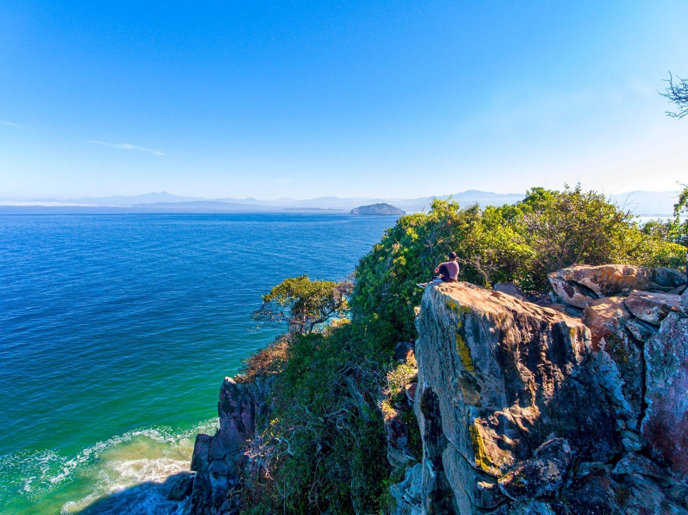
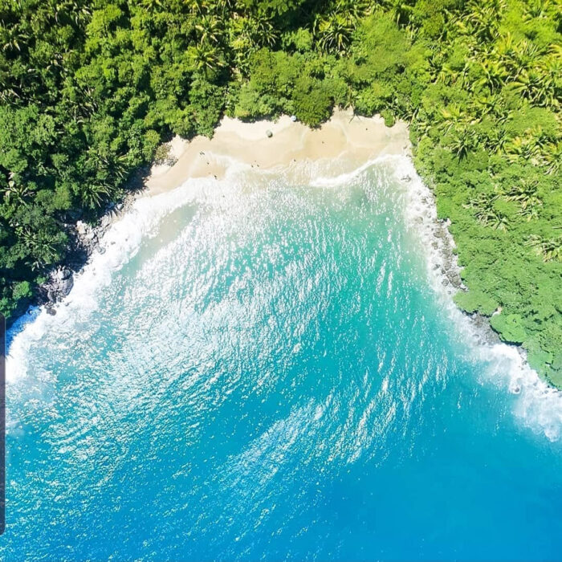
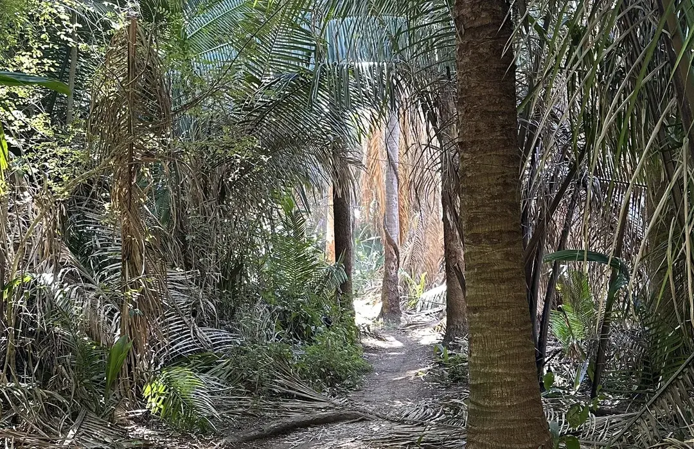
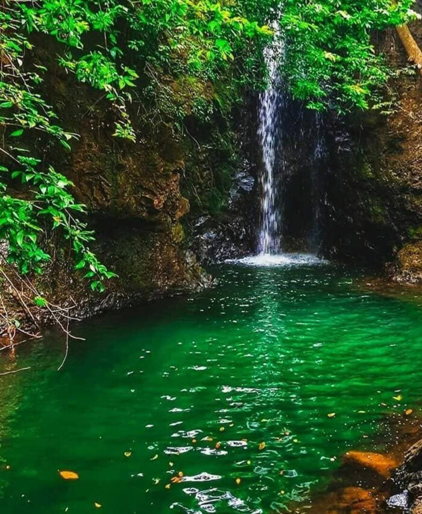
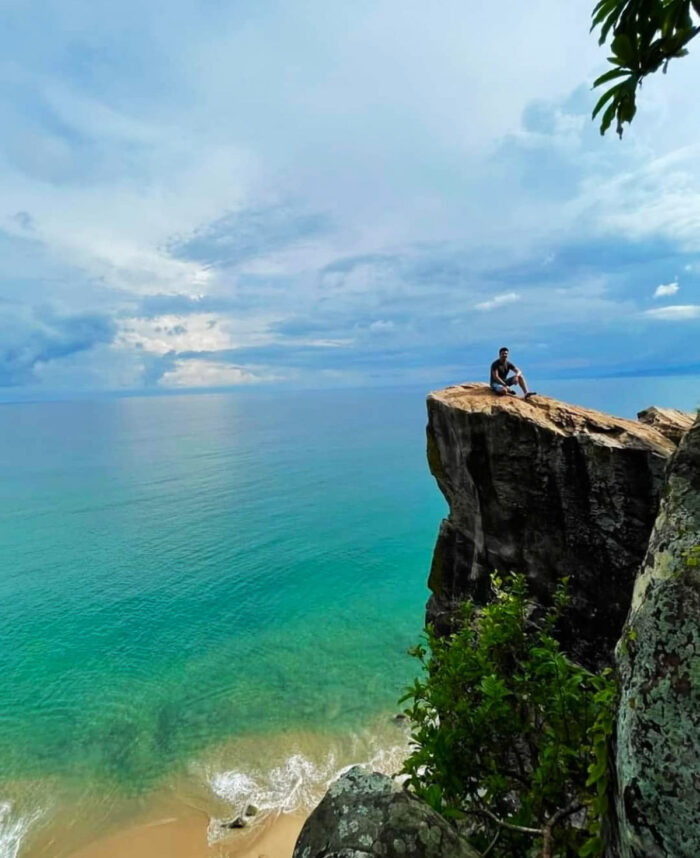

El secreto mejor guardado del Municipio de Compostela
Playa del Toro es un santuario ecológico de apenas 200 metros de longitud, famoso por sus aguas color turquesa, arena fina y la exuberante vegetación tropical que la rodea.
Al ser una playa virgen, ofrece una desconexión total. No encontrarás hoteles ni restaurantes, solo el sonido del mar, impresionantes acantilados y, en temporada de lluvias, una espectacular cascada que cae cerca de la orilla.





Actividades en contacto con la naturaleza
Llega caminando desde Los Ayala por un sendero de selva media. Una caminata de 45 minutos con miradores espectaculares.
Durante la temporada de lluvias, admira la caída de agua dulce que fluye desde la montaña hacia la arena.
Sus aguas tranquilas y rocas submarinas son perfectas para observar peces de colores. ¡No olvides tu equipo!
Si prefieres comodidad, toma una lancha desde Rincón de Guayabitos o Los Ayala. Llegarás en solo 10 minutos.
En la cima del sendero se encuentra un punto panorámico donde obtendrás las mejores fotos de la bahía.
Disfruta de la sensación de tener una isla para ti solo. Ideal para leer, meditar y descansar sin vendedores.
Al ser una Reserva Ecológica Virgen, no existen comercios ni restaurantes en el sitio. Aquí te decimos qué llevar:
Mañana (9 AM - 2 PM)
Lancha o Caminata (3km)
Sin Servicios (Virgen)
Noviembre - Mayo